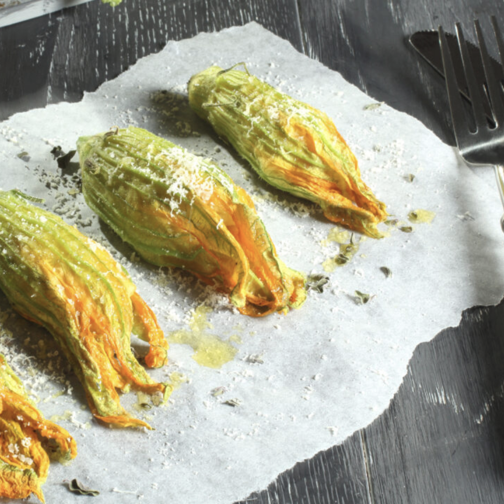

Fiori di zucca ripieni
Ingredienti: 13 fiori di zucca, 250 g di ricotta, 2 cucchiai di pesto, 5 foglie di basilico, 1 uovo, pangrattato, parmigiano, olio e sale.
Le dosi delle ricette sono per due persone.
Fai click sulle foto per scoprirle.
Ingredienti: 13 fiori di zucca, 250 g di ricotta, 2 cucchiai di pesto, 5 foglie di basilico, 1 uovo, pangrattato, parmigiano, olio e sale.
Ingredienti: 150 g di cous cous istantaneo, 150 ml di acqua bollente, 1 cipollotto, 1 peperone giallo, ciliegini, 2 scatolette di tonno, sale, olio, pepe.